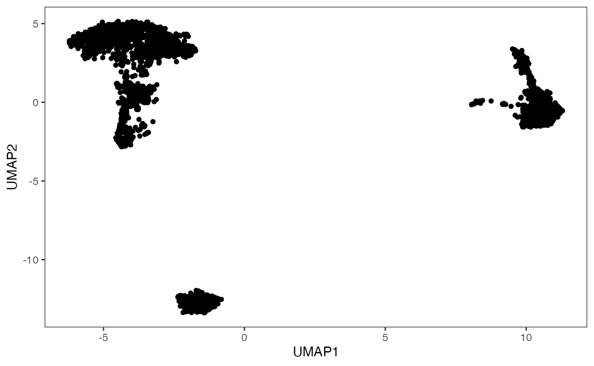
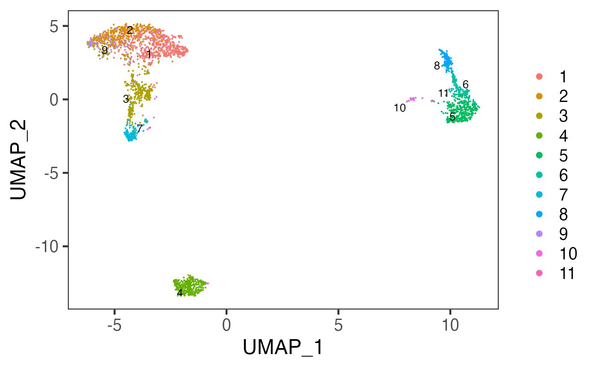

Introduction
For this section, we provide wrappers of three methods, listed in the table below. All functions takes an input SingleCellExperiment (SCE) object and other settings as arguments and returns the same SCE object with results updated in colData.
| Method | Dependency | Citation | Function |
|---|---|---|---|
| Scran SNN |
scran, igraph
|
Aaron Lun and Jonathan Griffiths, 2016. Gabor Csardi and Tamas Nepusz, 2006. | runScranSNN() |
| K-Means | stats |
Forgy, E. W., 1965. Hartigan, J. A. and Wong, M. A., 1979. Lloyd, S. P., 1957. MacQueen, J., 1967. | runKMeans() |
| Seurat | Seurat |
Michael Love and et al., 2014 | seuratFindClusters() |
Workflow
The clustering methods listed in the table above can be easily applied to any preprocessed SCE object. Meanwhile, there are other types of clustering methods supported by SCTK, but usually dependent to a curated workflow, such as celda. Here we present the usage of the three functions only.
Parameters
For each of the three functions, the common things are:
- The input SCE object -
inSCE. - The
colDatacolumn name to save the cluster labels -clusterName - The specific algorithm type supported by the dependency -
algorithm
As for another essential parameter, the data matrix used for running the algorithm is a must. Here, users should notice that:
- For
runKMeans(), only a dimension reduction is acceptable. Users need to useuseReducedDimto pass the argument. - For
runScranSNN(), either a feature expression matrix or a dimension reduction is acceptable. Users need to useuseAssayfor a full-sized expression data (assay),useAltExpandaltExpAssayfor a subsetted expression data (altExp), oruseReducedDimfor a dimension reduction. - For
seuratFindClusters(), it is included within the Seurat Curated Workflow, yet usable as an independent function. However, it will be complicated to use this way. It is recommended to invoke the Seurat clustering functionality in the UI since it is automated there. We will still present the complicated workflow later.
Other parameters are method specific, please refer to the function manual pages for the detail.
Example on Each
Preprocessing
To demonstrate a simple and clear example, here we use the “PBMC-3k” dataset from “10X” which can be easily imported with SCTK functions. The preprocessing only includes necessary steps before getting cluster labels (i.e. QC and filtering are excluded).
library(singleCellTK) pbmc3k <- importExampleData("pbmc3k") pbmc3k <- scater_logNormCounts(pbmc3k, "logcounts") # Go through the Seurat curated workflow to get basic scaled assay and dimension reduction pbmc3k <- seuratNormalizeData(inSCE = pbmc3k, useAssay = "counts") pbmc3k <- seuratFindHVG(inSCE = pbmc3k, useAssay = "seuratNormData") pbmc3k <- seuratScaleData(inSCE = pbmc3k, useAssay = "seuratNormData") pbmc3k <- seuratPCA(inSCE = pbmc3k, useAssay = "seuratScaledData") pbmc3k <- seuratRunUMAP(pbmc3k) # Optional visualization plotSCEDimReduceColData(inSCE = pbmc3k, colorBy = "Sample", reducedDimName = "seuratUMAP")

Scran SNN
The method specific parameters include:
-
k, the number of nearest neighbors used to construct the graph. Smaller value indicates higher resolution and larger number of clusters. -
nComp, the number of components to use whenuseAssayoruseAltExpis specified. WON’T work withuseReducedDim. - For
weightTypeandalgorithm, users should choose from a given list of options, which can be found with?runScranSNN. For the introduction of those options, please refer toscran::buildSNNGraph()andigraph.
# Directly use an assay pbmc3k <- runScranSNN(inSCE = pbmc3k, useAssay = "logcounts", k = 10, clusterName = "scranSNN_logcounts") plotSCEDimReduceColData(inSCE = pbmc3k, colorBy = "scranSNN_logcounts", conditionClass = "factor", reducedDimName = "seuratUMAP")

# Directly use a dimension reduction pbmc3k <- runScranSNN(inSCE = pbmc3k, useReducedDim = "seuratUMAP", k = 25, clusterName = "scranSNN_seuratUMAP") plotSCEDimReduceColData(inSCE = pbmc3k, colorBy = "scranSNN_seuratUMAP", conditionClass = "factor", reducedDimName = "seuratUMAP")

# Use a subset of an assay hvg <- getTopHVG(pbmc3k, "vst", n = 500) ae <- SingleCellExperiment(assays = list(logcounts = logcounts(pbmc3k[hvg,]))) altExp(pbmc3k, "subset") <- ae pbmc3k <- runScranSNN(inSCE = pbmc3k, useAltExp = "subset", altExpAssay = "logcounts", k = 8, clusterName = "scranSNN_altExp") plotSCEDimReduceColData(inSCE = pbmc3k, colorBy = "scranSNN_altExp", conditionClass = "factor", reducedDimName = "seuratUMAP")

K-Means
The method specific parameters include:
-
nCenters, the number of final clusters. This is required. -
nIter, the maximum number of iterations allowed. -
nStart, the number of random sets to choose. Since K-Means is an algorithm with reasonable randomness, the function allows attempting multiple initial configurations and reports on the best one. -
seed, The seed for the random number generator. - For
algorithm, users should choose from a given list of options, which can be found with?runKMeans. For the introduction of those options, please refer to?stats::kmeans.
pbmc3k <- runKMeans(inSCE = pbmc3k, useReducedDim = "seuratUMAP", nCenters = 13, clusterName = "kmeans_cluster") plotSCEDimReduceColData(inSCE = pbmc3k, colorBy = "kmeans_cluster", conditionClass = "factor", reducedDimName = "seuratUMAP")

Seurat
Here we will only present the examples of using seuratFindClusters(). For the detail of this function or the curated workflow, please refer to WHERE?
When users preprocessed the dataset with the Seurat Curated Workflow. The clustering can be easily fulfilled, because Seurat specific metadata is already existing.
pbmc3k <- seuratFindClusters(inSCE = pbmc3k, useAssay = "seuratScaledData") plotSCEDimReduceColData(inSCE = pbmc3k, colorBy = "Seurat_louvain_Resolution0.8", conditionClass = "factor", reducedDimName = "seuratUMAP")

When users preprocessed the dataset with other approaches. The clustering with Seurat function can be complicated, since some sorts of Seurat specific metadata is always needed.
# Let's get another totally independent dimension reduction for demonstration. pbmc3k <- getPCA(pbmc3k, reducedDimName = "PCA") pca <- reducedDim(pbmc3k, "PCA") rownames(pca) <- gsub("_", "-", rownames(pca)) if ("percentVar" %in% names(attributes(pca))) { stdev <- as.numeric(attr(pca, "percentVar")) new_pca <- Seurat::CreateDimReducObject(embeddings = pca, assay = "RNA", stdev = stdev, key = "PC_") } else { new_pca <- Seurat::CreateDimReducObject(embeddings = pca, assay = "RNA", key = "PC_") } # Then we can take the Seurat Curated Workflow independent dimension # reduction as an input. pbmc3k <- seuratFindClusters(inSCE = pbmc3k, useAssay = assayNames(pbmc3k)[1], # Need a placeholder externalReduction = new_pca, resolution = 0.8) plotSCEDimReduceColData(inSCE = pbmc3k, colorBy = "Seurat_louvain_Resolution0.8", conditionClass = "factor", reducedDimName = "seuratUMAP")